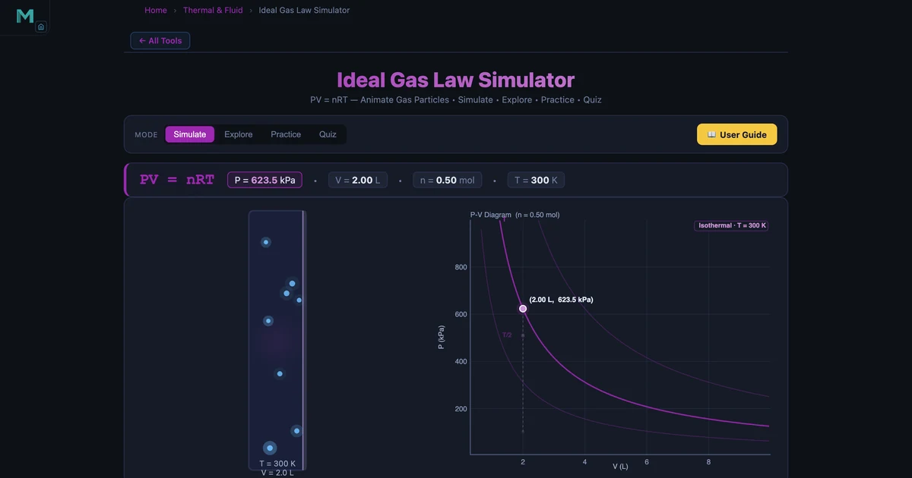
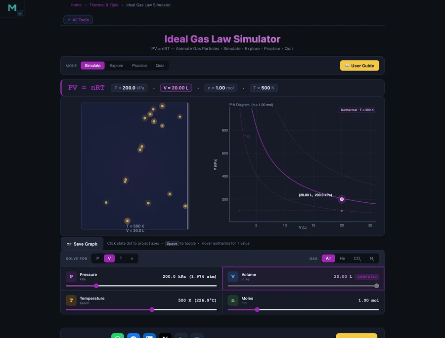

Ideal Gas Law Calculator — PV = nRT Simulator & Guide
The ideal gas law PV = nRT is the master equation that unifies pressure, volume, temperature, and quantity of gas into a single, powerful relationship. From predicting tyre pressure on a hot day to designing scuba tanks and chemical reactors, this equation is used every day in engineering and science. This guide explains all four individual gas laws, shows how they combine, walks through worked examples, and lets you explore every scenario in the Ideal Gas Law Simulator.

- The ideal gas law is PV = nRT, relating pressure P, volume V, moles n, the gas constant R = 8.314 J/(mol·K), and absolute temperature T in Kelvin.
- Rearrange it to solve for any unknown: P = nRT/V, V = nRT/P, T = PV/nR, or n = PV/RT — always use Kelvin, never Celsius.
- At STP (0°C = 273.15 K, 101.325 kPa) one mole of any ideal gas occupies exactly 22.414 litres.
What Is the Ideal Gas Law?
An ideal gas is a theoretical model in which gas molecules have negligible volume and interact only through perfectly elastic collisions — no intermolecular attractions or repulsions. For such a gas, three experimental observations — Boyle's Law, Charles' Law, and Avogadro's Law — can be combined into a single equation:
where:
- P — pressure (kPa or Pa)
- V — volume (L or m³)
- n — amount of substance (moles)
- R — universal gas constant = 8.314 J/(mol·K)
- T — absolute temperature (Kelvin; K = °C + 273.15)
Real gases (e.g. CO₂ at high pressure, steam near its boiling point) deviate from this model, but for most engineering conditions at moderate pressures and temperatures PV = nRT gives answers within 1–2% of measured values.
The Four Gas Variables — Solve for Any One
The beauty of PV = nRT is that it can be rearranged to solve for whichever variable is unknown, given the other three:
In the simulator, the four Lock tabs let you select which variable to solve for. The locked variable's slider becomes read-only and updates automatically as you move the other three.
Worked Example: Pressure of Air in a Container
The simulator's default "Solve for P" state uses n = 0.5 mol, T = 300 K (27°C), V = 2.0 L:
That is about 6.15 atmospheres — roughly the pressure inside a compressed-air cylinder. The simulator confirms this reading, and the live P-V diagram plots the current state dot on the isotherm for T = 300 K.
Vary the temperature slider from 200 K to 800 K and watch the state dot move along isotherms on the P-V diagram. This is Boyle's Law in action within a single temperature change.
Boyle's, Charles' and Gay-Lussac's Laws
Each of the three classical gas laws is a special case of PV = nRT with two variables held constant:
Boyle's Law — constant T and n
Pressure and volume are inversely proportional. Halving the volume doubles the pressure. In the simulator: lock to "Solve for P", hold T and n fixed, and drag the V slider — the state dot traces the current isotherm on the P-V diagram.
Charles' Law — constant P and n
Volume is directly proportional to absolute temperature at fixed pressure. Gas at 300 K occupying 3 L expands to 6 L when heated to 600 K. This explains why a balloon shrinks in the cold — it obeys Charles' Law.
Gay-Lussac's Law — constant V and n
Pressure is directly proportional to temperature at fixed volume. A sealed aerosol can at 20°C (293 K) heated to 60°C (333 K) increases in pressure by a factor of 333/293 = 1.14 — a 14% rise that could rupture a container near its rated burst pressure.

The Combined Gas Law
When a gas changes state — all three of P, V, T change while n stays fixed — the combined gas law is the most convenient form:
Example: A gas at P₁ = 100 kPa, V₁ = 3 L, T₁ = 300 K is compressed to V₂ = 1 L and heated to T₂ = 400 K:
This scenario appears in the simulator's "Combined" section of the Explore mode, with a worked example and graph.
Molar Volume at STP
At Standard Temperature and Pressure (0°C = 273.15 K, 101.325 kPa), one mole of any ideal gas occupies exactly 22.414 litres. Verification with PV = nRT:
This is a crucial benchmark: if you calculate a molar volume significantly different from 22.4 L/mol at STP, check your unit conversions — most errors arise from mixing kPa and Pa, or Celsius and Kelvin.
Real-World Applications
- Tyre pressure — A car tyre at 20°C (293 K) pumped to 220 kPa will read approximately 220 × 313/293 = 235 kPa after driving to 40°C (313 K), because V and n are constant (Gay-Lussac).
- Scuba tank — A 12-litre tank at 200 bar (20 000 kPa) and 20°C contains n = PV/RT = 20 000 × 12 / (8.314 × 293) ≈ 98 mol of air — enough for about 50 minutes of diving.
- Weather balloons — As a balloon rises, external pressure falls, so the gas expands (Boyle's Law). At 30 km altitude, where P ≈ 1.2 kPa, a balloon that was 1 m³ at sea level expands to about 84 m³.
- Engine combustion — The rapid pressure rise during the power stroke of a four-stroke engine follows Gay-Lussac's Law: combustion raises T, pressure rises dramatically in the fixed-volume cylinder, driving the piston.
Using the Ideal Gas Law Simulator
Open the Ideal Gas Law Simulator and explore these four modes:
- Simulate — Choose "Solve for" P, V, T, or n using the Lock tabs. Adjust the three independent sliders and watch the locked variable update instantly. The P-V diagram plots the state dot on the correct isotherm, and the animated gas container shows particles speeding up as T increases.
- Explore — Read concept cards grouped by Laws, Equation, Combined processes, and Applications. Each card has a formula, description, and a worked numerical example.
- Practice — Solve 12 randomised problems: find P from n, T, V; find V using Boyle's Law; apply Gay-Lussac to a tyre; calculate moles in a scuba tank. Full step-by-step solutions are shown on request.
- Quiz — Test yourself with 5 random questions from a pool of 15, covering all gas laws and their applications.
Switch the gas type between Air, Helium, CO₂, and Nitrogen to see how the colour of the particle animation changes, representing the different thermal behaviour at the same temperature.
Key Takeaways
- The ideal gas law \(PV = nRT\) relates all four gas variables; rearrange to solve for any one.
- R = 8.314 J/(mol·K) — always use absolute temperature in Kelvin, never Celsius.
- Boyle's Law: \(P_1V_1 = P_2V_2\) at constant T and n — pressure and volume are inversely proportional.
- Charles' Law: \(V/T = \text{const}\) at constant P — volume proportional to absolute temperature.
- Gay-Lussac's Law: \(P/T = \text{const}\) at constant V — sealed containers pressure-up when heated.
- At STP (0°C, 101.325 kPa), 1 mol of ideal gas occupies exactly 22.4 L.
- Real gases deviate from PV = nRT at high pressure or near their boiling point.
Frequently Asked Questions
What is the ideal gas law?
PV = nRT relates pressure (P), volume (V), moles (n), gas constant (R = 8.314 J/mol·K), and absolute temperature (T). It combines Boyle's, Charles', and Avogadro's laws.
What is the value of R?
R = 8.314 J/(mol·K) = 8.314 Pa·m³/(mol·K) = 8.314 L·kPa/(mol·K) = 0.08206 L·atm/(mol·K). Use the appropriate form based on your pressure and volume units.
What is Boyle's Law?
At constant temperature and moles, P₁V₁ = P₂V₂. Pressure and volume are inversely proportional — halving the volume doubles the pressure.
What is the molar volume at STP?
At 0°C and 101.325 kPa, one mole of ideal gas occupies 22.414 L. V = nRT/P = 1 × 8.314 × 273.15 / 101.325 = 22.41 L/mol.
What is the combined gas law?
P₁V₁/T₁ = P₂V₂/T₂ for a fixed amount of gas changing state. Used when P, V, and T all change simultaneously (e.g. a gas compressed and heated at the same time).